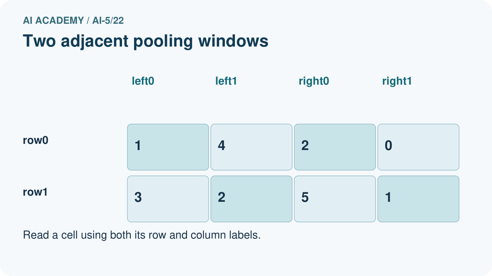
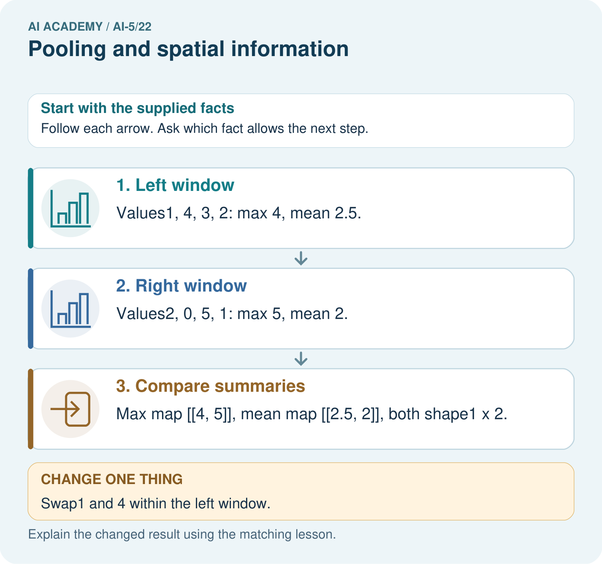

AI Academy · Level 5 · Grade 10 · Week 22 · Teacher guide
Pooling and spatial information
Learn to understand, design, build, test and explain AI systems responsibly.
Project: Image-pattern Network Investigation
Teacher guide · 1 of 6
Prepare the purpose, prerequisites and materials
Teach the learning cycle
Primary target: Compute max and mean pooling under an explicit window rule
| Session | Sequence and minutes | Resources |
|---|---|---|
| Session 1 · Understand · 45 min | 0–7: recall and prerequisite; 7–15: inspect the concrete case and predict; 15–30: teacher models the worked trace; 30–40: learners explain a step using the text and visual; 40–45: check the core idea. | Sections 1–6; record the brief recall in the workbook. |
| Session 2 · Practise · 45 min | 0–5: retrieve the procedure; 5–15: W2 completion practice; 15–23: explain and check with a partner; 23–30: each learner answers the misconception check; 30–40: targeted reteaching or a harder variation; 40–45: prepare the investigation. | Sections 7–10; use the matching workbook W2 and misconception check. |
| Session 3 · Investigate and transfer · 45 min | 0–5: retrieve the decision rule; 5–20: investigate or trace; 20–30: start the independent case; 30–38: connect the project; 38–43: act on feedback; 43–45: plan the return check. | Sections 9 and 11–14. Give extra time to finish the full task set; use Section 15 when the week includes a coding lab. |
This is a starting allocation of 135 minutes, not a validated duration. Preserve all named topics. Schedule extra time for connected examples, the full investigation, independent cases and project building. Repeated copies of a case share one recorded attempt; they are not new evidence.
Retrieval answer guidance
Convolution as a local operation
Without opening the old lesson, explain one key idea from Convolution as a local operation. Give an example and a mistake that the idea helps you avoid.
Look for: Compute a local weighted sum at each valid image position
Reference example, not the only acceptable wording: Teacher explanation: Window rows are [2, 0] and [1, 3]. Products are 2, 0, 0 and 3, giving output 5.
Learned representations
Without opening the old lesson, explain one key idea from Learned representations. Give an example and a mistake that the idea helps you avoid.
Look for: Trace an input through a hidden representation and a decision rule
Reference example, not the only acceptable wording: Teacher explanation: The vectors are [5, 0], [0, 5] and [0, 0]. Predictions are 1, 0 and 0. Equal width and height does not satisfy strictly greater.
Regularisation and early stopping
Without opening the old lesson, explain one key idea from Regularisation and early stopping. Give an example and a mistake that the idea helps you avoid.
Look for: Separate a weight penalty from prediction error
Reference example, not the only acceptable wording: Teacher explanation: MSE 0, penalty 2, total J 2, total gradient 2. Zero data gradient does not remove the penalty gradient.
Use two 45-minute sessions. Prepare a labelled 4 by 4 grid with four window outlines. State complete windows, stride 2 and no padding before any arithmetic. Keep pooling separate from ReLU, and discuss loss of location through explicit collisions. Reference for the floor-based pooling convention: https://docs.pytorch.org/docs/stable/generated/torch.nn.modules.pooling.MaxPool2d.html . No software library is required.
Outcomes
Compute max and mean pooling under an explicit window rule
Use collisions to explain lost spatial information
Test boundary and movement claims with revealing examples
Preparation
Printed lesson and workbook; paper and pencil
Calculator and optional local Python 3 editor; no packages or AI accounts needed
Use the fictional examples supplied; prepare the fresh retry before class
Prerequisite answer
Only the start at row 0 column 0 fits. The output shape is 1 by 1 under the complete-window rule.
End goal for the pictorial case
By the end, I can explain pooling and spatial information using a traced example and a stated limitation.
This added worked case illustrates the week’s main idea. Retain all original and connected topics; schedule its practice within the teaching cycle.
Teacher guide · 2 of 6
Explain and model the mechanism
A fictional single-channel feature map has rows [1, 4, 2, 0], [3, 2, 5, 1], [0, 6, 1, 3] and [2, 4, 2, 7]. Use a 2 by 2 window, stride 2, no padding and only complete windows. Coordinates are zero-based. The four starts are [0, 0], [0, 2], [2, 0] and [2, 2].
Max pooling keeps the largest value in each window. Mean pooling adds the four values and divides by 4. Neither operation learns weights in this lesson. These are fixed summaries of the incoming feature map, unlike the trainable kernel parameters introduced last week.
The max output is [[4, 5], [6, 7]], and the mean output is [[2.5, 2], [3, 3.25]]. Both have shape 2 by 2. Sixteen values become four, but the four outputs still preserve the coarse arrangement of the four regions.
This code assumes a nonempty rectangular numeric map at least 2 by 2. It uses only complete 2 by 2 windows, stride 2 and no padding. It returns two separate summaries of the same map; it does not apply one pooling operation after the other.
For this complete-window rule the output shape is floor((H - 2) / 2) + 1 by floor((W - 2) / 2) + 1. A 3 by 3 map produces just one output; its last row and last column are not read. Do not silently invent a partial-window rule or pad missing positions.
| Term | Meaning |
|---|---|
| Max pooling | Replacing each window by its largest value |
| Mean pooling | Replacing each window by the arithmetic mean of its values |
| Spatial information | Information about where values occur and how positions relate |
| Pooling collision | Different inputs producing the same pooled values |
A maximum does not identify its location
Guided: both windows have maximum 6 and mean 1.5. Either scalar alone cannot distinguish their different nonzero positions. Exit: the first two visual windows collide, so exact reconstruction is impossible from the pooled values alone. The 8 crossing from column 1 to column 2 changes the pooled map, so universal shift invariance does not follow.
Model the reasoning aloud
Use the complete worked example below before asking learners to complete W2. Reveal a small part, invite a prediction, then explain the deciding step. These teacher notes contain solutions; do not reveal the independent case answer during modelling.
A maximum does not identify its location
| Thinking move | Teacher prompt |
|---|---|
| Plan | What is given? What is the question? Which procedure fits these facts? |
| Do | Point to each input and intermediate step in the worked trace. Name the rule that allows the next step. |
| Check | Does the output answer the question? Which assumption or limitation prevents a larger claim? |
Use the diagram and verbal explanation together. Ask learners to match a sentence to a specific visual step; do not assign learners fixed visual or auditory learning styles.
A pictorial worked case: Pooling and spatial information
Pool a small map and show the detail it cannot retain.
The facts we will use
Feature map rows [1, 4, 2, 0],[3, 2, 5, 1]. Pool non-overlapping2×2 windows, stride2, no padding.
All inputs and outcomes in this worked example are invented classroom data; no real model run is claimed.


Read the picture one step at a time
Why this result follows
Pooling compresses each local window into a summary. Maximum keeps its largest value; mean keeps its average. Neither summary records where each value appeared. Swapping values inside one window leaves both summaries unchanged here, so the pooled output cannot reconstruct the original arrangement. The chosen window, stride and boundary policy determine the output shape.
What this example does not establish
Pooling is a declared aggregation, not automatic improvement; losing location can harm tasks that need precise positions.
Change one thing in the pictured case
Change: Swap1 and 4 within the left window.
Prediction: Both pooled maps remain unchanged.
Reason: Max and mean ignore the positions of values inside the same window.
Ask while showing the picture
Cover the result. Ask learners to name the inputs and predict the next step. Uncover one step, connect the icon to the actual procedure, and explain its evidence. Then change the supplied condition and compare. The picture is a representation; it does not document execution of a real AI model.
Teacher guide · 3 of 6
Demonstrate and guide practice
| Time or stage | Teacher action |
|---|---|
| Session 1 start to 7 minutes | Retrieve valid window starts and mark the four nonoverlapping regions. |
| 7 to 18 minutes | Calculate both summaries in the first region, then complete W1. |
| 18 to 32 minutes | Trace the remaining regions and run or hand-trace the optional code. |
| 32 to 45 minutes | Use W2 and the visual to distinguish lost location from retained regional arrangement. |
| Session 2 start to 8 minutes | Complete the guided collision and discuss why storing a maximum position is still insufficient for reconstruction. |
| 8 to 20 minutes | Use W3 to expose the omitted border, then trace the movement counterexample in W5. |
| 20 to 35 minutes | Collect W4 independently, requiring signed sums and both maps without applying ReLU. |
| 35 to 45 minutes | Use the exit response to qualify claims, then administer the fresh retry. |
Use the worked example in Sections 3 and 6. Collect a prediction before revealing its result; ask the learner to point to each intermediate fact.
Provide separate columns for window values, sum, divisor, maximum and mean. Use numbered positions rather than colour alone. Extension: enumerate all sixteen binary 2 by 2 windows, group them by maximum and mean, and identify collisions under each summary.
Reduce help deliberately
Completion task: Give two different 2 by 2 windows containing exactly one 4 and three zeros that have the same maximum and mean. Explain why either scalar alone cannot identify the position of the 4.
Teacher check: Teacher explanation: For example, [[4, 0], [0, 0]] and [[0, 4], [0, 0]] both give maximum 4 and mean 1. A deterministic head receiving the same scalar must give the same output, so it cannot distinguish those positions.
Start by identifying the given inputs together. Leave the intermediate steps blank. If needed, model one step, then withdraw that help on the next step. Move to a full trace only when the partial trace is understood. For partners, alternate explainer and checker; collect a response from every learner before discussion.
Individual reasoning check
Use the worked case for Pooling and spatial information. Proposed explanation: “Max pooling turns negative numbers into zero”. Decide whether this explanation is supported. Point to the step or supplied fact that decides; explain your repair if needed.
Expected correction: That is a ReLU behaviour, not the maximum of an all-negative window.
Collect explanations, not only yes/no votes. If a misunderstanding is common, re-model the relevant step for the class. If it affects a few learners, give a short targeted group explanation while others solve a more demanding variation.
Pictorial practice question
Can the max map reveal where the 4 originally appeared? Point to the relevant step in the picture, then write the changed result and the rule or evidence that supports it.
Reasoned teacher answer
No. The original 4 was top-right in the left window, but after swapping it is top-left; the pooled value 4 is identical. Changed-case check: Both pooled maps remain unchanged. Max and mean ignore the positions of values inside the same window.
Changed-case reasoning: Both pooled maps remain unchanged. Max and mean ignore the positions of values inside the same window.
Collect each learner’s explanation before discussion. Use the first missing connection between input, deciding step and result to choose support. This question is worked-case practice, not fresh mastery evidence.
Teacher guide · 4 of 6
Run the investigation and diagnose misconceptions
Max pooling turns negative numbers into zero: That is a ReLU behaviour, not the maximum of an all-negative window.
Pooling removes all spatial information: A local pooled grid retains coarse regional arrangement while losing within-window detail.
Saving the maximum position restores the input: Other values remain unknown even when a unique maximum location is recorded.
Use Section 9 for the evidence ledger. Add a boundary or missing-input case and record the expected response before checking. More successful repeats of one case do not establish wider coverage.
Match the support to the first error
| What the response shows | Next teaching action |
|---|---|
| Missing or misread facts | Read the case aloud, mark supplied versus unknown facts, and let the learner restate it. |
| Wrong procedure | Return to the deciding step in the worked case. Contrast it with the proposed incorrect explanation. |
| Arithmetic or implementation error | Trace intermediate values or lines; preserve the first mismatch and retry that step. |
| Correct result without a reason | Ask for a trace and a changed case before marking independent understanding. |
| An unsupported wider claim | Ask which supplied evidence supports the claim and which further observation would be needed. |
Offer an oral explanation, drawing, enlarged visual or fewer examples when that removes a reading/writing barrier. Keep the same reasoning goal. Stretch secure learners by changing a boundary or assumption and asking them to defend the effect, not simply by assigning more of the same questions.
Teacher guide · 5 of 6
Assess and explain the answers
Guided and exit questions
Guided: both windows have maximum 6 and mean 1.5. Either scalar alone cannot distinguish their different nonzero positions. Exit: the first two visual windows collide, so exact reconstruction is impossible from the pooled values alone. The 8 crossing from column 1 to column 2 changes the pooled map, so universal shift invariance does not follow.
W1 Calculate both summaries
For the lesson window starting at [2, 2], list the four values, sum, maximum and mean. State the complete pooled output shape.
Teacher explanation: Values are 1, 3, 2 and 7. Sum is 13, maximum 7 and mean 3.25. Each pooled output has shape 2 by 2.
W2 Prove that location can be lost
Give two different 2 by 2 windows containing exactly one 4 and three zeros that have the same maximum and mean. Explain why either scalar alone cannot identify the position of the 4.
Teacher explanation: For example, [[4, 0], [0, 0]] and [[0, 4], [0, 0]] both give maximum 4 and mean 1. A deterministic head receiving the same scalar must give the same output, so it cannot distinguish those positions.
W3 Audit an omitted border
Apply the lesson complete-window rule to [[1, 2, 99], [3, 4, 99], [99, 99, 99]]. Give the output shape and both outputs. Explain why neither output includes 99.
Teacher explanation: Shape is 1 by 1. Only [[1, 2], [3, 4]] is read, giving maximum 4 and mean 2.5. The final row and column lie outside the only complete stride-2 window.
W4 Pool a new map independently
Use rows [-4, -1, 2, 6], [-3, -2, 4, 0], [5, 1, -8, -2], [3, 7, -4, -6]. Under the lesson rule, give all four sums, the max map and the mean map. Explain why replacing a negative maximum by zero is an error here.
Teacher explanation: Window sums in row order are -10, 12, 16 and -20. Max map is [[-1, 6], [7, -2]]. Mean map is [[-2.5, 3], [4, -5]]. Zero is not in either all-negative window; pooling is not ReLU and must return the largest actual value.
W5 Check the movement boundary
A 2 by 4 map is zero except for 8 at row 0 column 1. Move the 8 to column 2 and set its old position to zero. Give the max and mean maps before and after. What claim does this refute?
Teacher explanation: Before: max [[8, 0]], mean [[2, 0]]. After: max [[0, 8]], mean [[0, 2]]. Crossing a pooling boundary changes the output, refuting guaranteed invariance to every one-pixel movement.
Independent assessment and fresh retry
W4 requires sums -10, 12, 16, -20, max map [[-1, 6], [7, -2]] and mean map [[-2.5, 3], [4, -5]]. Fresh retry: rows [-6, -2, 1, 5] and [-4, -8, 3, 7]. Output shape is 1 by 2. Sums are -20 and 16; max map is [[-2, 7]] and mean map is [[-5, 4]]. Require a signed maximum rather than a zero-clamped answer.
Assess independent transfer
Selected case: Use rows [-4, -1, 2, 6], [-3, -2, 4, 0], [5, 1, -8, -2], [3, 7, -4, -6]. Under the lesson rule, give all four sums, the max map and the mean map. Explain why replacing a negative maximum by zero is an error here.
Selected case answer
Teacher explanation: Window sums in row order are -10, 12, 16 and -20. Max map is [[-1, 6], [7, -2]]. Mean map is [[-2.5, 3], [4, -5]]. Zero is not in either all-negative window; pooling is not ReLU and must return the largest actual value.
| Dimension | Evidence required |
|---|---|
| Explanation | Names the applicable idea or procedure and ties it to the supplied facts. |
| Trace and result | Preserves the given inputs and shows the relevant intermediate steps; distinguishes a prediction from an observed execution. |
| Limits | States the assumptions, missing evidence or conditions under which the result would change. |
Record each dimension as not yet, with support, or independent. Accept a valid alternative procedure with a defensible trace. Do not penalise an honestly recorded model failure if the learner correctly explains its evidence and limits.
Feedback that the learner uses
Name the earliest unsupported step and give one action to repair it. Have the learner make that repair now and explain why. Then assess the relevant skill on a fresh, fully specified case. Confirm it was not previously practised with feedback; solve and check the new case before assigning it. A follow-up design prompt is a starting brief, not automatically an equivalent test.
Teacher guide · 6 of 6
Connect the project, support and next lesson
Add a labelled pooling and spatial information evidence sheet to Image-pattern Network Investigation. Show how you can compute max and mean pooling under an explicit window rule. Use the supplied fictional case and keep its inputs, intermediate steps, calculation or prediction, and limitation. Connect this record to last week’s record; a matching answer without a trace is insufficient.
Provide separate columns for window values, sum, divisor, maximum and mean. Use numbered positions rather than colour alone. Extension: enumerate all sixteen binary 2 by 2 windows, group them by maximum and mean, and identify collisions under each summary.
Week 23 trains and evaluates a small image model with a declared baseline and data split.
Retain the project ledger and assess a changed case after support. Check the relevant prerequisite before carrying this component forward.
Plan the delayed return
Suggested return points in this level: ai-5/23, ai-5/25, ai-5/28. Use actual classroom dates, adjusting for holidays and gaps. One, three and six teaching weeks are scheduling choices, not a claimed optimal spacing.
At a delayed check, ask for the idea from memory and a changed application. Compare with the earlier independent response and record support used. For a new level, revisit the previous capstone before checking the new prerequisites.
| Record | Teacher evidence |
|---|---|
| Learner code and date | |
| Concept and case used; prior exposure | |
| Explanation / trace / limits | |
| Support and first repair | |
| Changed case and delayed outcome | |
| Next teaching action |
Use the evidence to choose reteaching or the next step. A completed page, confidence rating or attractive project does not by itself demonstrate understanding.
Project evidence from this case
For your Image-pattern Network Investigation, save the input, procedure, observed result and limitation of this check. Label this worked example as practice; use a different, previously unreviewed case when checking independent understanding.